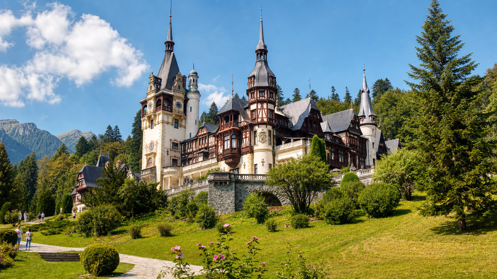

07.Călătorii și turism

La sfârșitul lecției vei ști
Să planificio călătorie: transport, cazare, program, buget și obiective turistice.
Să relatezio vacanță sau o excursie, cu evenimente așezate clar în timp.
Să recunoștimai-mult-ca-perfectul și să folosești conectori de secvențiere.
Să redacteziun jurnal de călătorie coerent, cu impresii și recomandări.
Vocabular tematic
I. Comprehensiune de lectură
model B1A. Citește textul
O excursie la Castelul Peleș
În luna mai, Mara și doi prieteni au decis să facă o excursie de weekend la Sinaia. Căutaseră de mult timp un loc aproape de București, cu natură, istorie și obiective turistice interesante. Cu o săptămână înainte, rezervaseră o cameră la o pensiune mică, cumpăraseră bilete de tren și pregătiseră un itinerar simplu.
Au plecat sâmbătă dimineața devreme. Trenul a fost aglomerat, dar drumul prin munți a fost frumos. Când au ajuns în Sinaia, au lăsat bagajele la pensiune și au mers pe jos spre Castelul Peleș. Deși văzuseră multe fotografii înainte, castelul li s-a părut mai spectaculos în realitate: turnurile, lemnul sculptat și grădinile erau foarte bine îngrijite.
La intrare, au aflat că următorul tur ghidat începea peste douăzeci de minute. Până atunci, au făcut fotografii în curte și au citit câteva informații despre familia regală. În interior, ghidul le-a povestit despre camerele castelului, despre colecțiile de artă și despre felul în care fusese construită reședința.
Seara, Mara a scris în jurnalul ei de călătorie că excursia fusese scurtă, dar memorabilă. Dacă ar planifica din nou vizita, ar rezerva biletele online și ar pleca mai devreme, ca să evite aglomerația. Totuși, le-ar recomanda tuturor să viziteze Peleșul, pentru că este unul dintre cele mai frumoase obiective turistice din România.
B. Adevărat sau fals
- Mara și prietenii ei au mers la Sinaia în luna mai.
- Ei rezervaseră cazarea înainte de excursie.
- Castelul Peleș li s-a părut mai puțin interesant decât în fotografii.
- Turul ghidat începea imediat, fără așteptare.
- Mara ar recomanda vizita la Peleș.
C. Răspunde la întrebări
- De ce au ales Sinaia pentru excursie?
- Ce pregătiseră înainte de plecare?
- Ce au făcut după ce au ajuns în Sinaia?
- Ce a povestit ghidul în interiorul castelului?
- Ce ar face Mara diferit data viitoare?
D. Găsește în text
- Două elemente de planificare: și .
- Două detalii despre Castelul Peleș: și .
- Un dezavantaj al excursiei: .
- O recomandare pentru viitor: .
Cheie orientativă
A/F: 1-A, 2-A, 3-F, 4-F, 5-A. C: era aproape de București și avea natură, istorie, obiective; rezervaseră cazare, cumpăraseră bilete, pregătiseră itinerar; au lăsat bagajele și au mers spre Peleș; despre camere, colecții și construcție; ar rezerva online și ar pleca mai devreme.
II. Gramatică și vocabular
mai-mult-ca-perfect · secvențiereA. Teorie: mai-mult-ca-perfectul receptiv
B. Secvențierea evenimentelor
| Conector | Exemplu | Rol |
|---|---|---|
| mai întâi | Mai întâi am verificat orarul trenurilor. | primul pas |
| după aceea | După aceea am rezervat cazarea. | următorul pas |
| între timp | Între timp, prietenii mei au pregătit bagajele. | acțiune paralelă |
| când am ajuns | Când am ajuns, ghidul începuse prezentarea. | moment precis |
| la final | La final am scris impresiile în jurnal. | încheiere |
C. Recunoaște mai-mult-ca-perfectul
- Cumpărasem biletele înainte să plecăm. Forma este:
- Ei rezervaseră camera la pensiune. Forma este:
- Ghidul începuse turul când am ajuns. Forma este:
- Noi vizitaserăm grădinile înainte de prânz. Forma este:
- Mara scrisese deja câteva impresii. Forma este:
D. Alege conectorul potrivit
- am cumpărat biletele, apoi am rezervat camera. (Mai întâi / La final)
- Am lăsat bagajele la pensiune. am plecat spre castel. (După aceea / Între timp)
- Noi cumpăram apă. , ghidul pregătea grupul. (Între timp / La final)
- , am scris impresiile în jurnal. (La final / Mai întâi)
- am ajuns, turul începuse deja. (Când / După aceea)
E. Pune evenimentele în ordine
- Am vizitat castelul.
- Am cumpărat biletele de tren.
- Am scris impresiile în jurnal.
- Am rezervat cazarea.
- Am ajuns în Sinaia.
F. Derivare de vocabular
| Cuvânt de bază | Completează propoziția |
|---|---|
| a rezerva | Am primit confirmarea pentru camerei. |
| a călători | cu trenul a fost confortabilă. |
| turist | Castelul Peleș este un obiectiv important. |
| a vizita | castelului a durat două ore. |
| a recomanda | Ghidul ne-a făcut o foarte bună. |
G. Construiește propoziții
Scrie cinci propoziții despre o călătorie. Folosește: 1) mai întâi, 2) după aceea, 3) între timp, 4) o formă la mai-mult-ca-perfect, 5) la final.
Cheie orientativă
C: cumpărasem, rezervaseră, începuse, vizitaserăm, scrisese. D: Mai întâi, După aceea, Între timp, La final, Când. E: bilete, cazare, ajuns, vizitat, jurnal. F: rezervarea, călătoria, turistic, vizitarea, recomandare.
III. Exprimare scrisă
jurnal de călătorieA. Jurnal de călătorie
Scrie un jurnal de 120-150 de cuvinte despre o excursie reală sau imaginară. Include destinația, transportul, cazarea, două obiective turistice, o problemă și o impresie finală.
B. Email către pensiune
Scrie un email pentru a cere informații despre cazare: disponibilitate, preț, mic dejun, parcare, ora de check-in și distanța până la obiective.
C. Itinerar
Planifică o excursie de o zi la Sinaia. Notează orele, transportul, locurile vizitate, pauzele și bugetul aproximativ.
IV. Ascultare
la recepțieAscultă textul citit de profesor sau folosește transcrierea pentru exercițiu.
La recepție, turistul spune că rezervase o cameră dublă pentru două nopți. Recepționera verifică sistemul și confirmă rezervarea. Ea explică faptul că micul dejun este inclus, parcarea este gratuită, iar camera va fi disponibilă după ora trei. Turistul întreabă cum poate ajunge la Castelul Peleș. Recepționera îi recomandă să meargă pe jos prin parc, deoarece traseul este plăcut și durează aproximativ douăzeci de minute.
- Turistul rezervase o cameră .
- Rezervarea este pentru două .
- Micul dejun este .
- Camera va fi disponibilă după ora .
- Drumul până la Peleș durează aproximativ douăzeci de .
Cheie orientativă
dublă, nopți, inclus, trei, minute.
V. Exprimare orală
model examen B1A. Conversație dirijată
Răspunde la întrebări: Unde îți place să călătorești? Cum planifici o vacanță? Ce tip de cazare preferi? Ce obiectiv turistic ai recomanda?
B. Monolog
Vorbește 2 minute despre o călătorie memorabilă. Include destinația, transportul, cazarea, ce vizitaseși înainte, ce ai făcut acolo și ce ai recomanda.
C. Joc de rol
Studentul A este turistul, iar Studentul B este recepționerul. Discutați despre rezervare, cameră, mic dejun, parcare, traseu și obiective turistice.